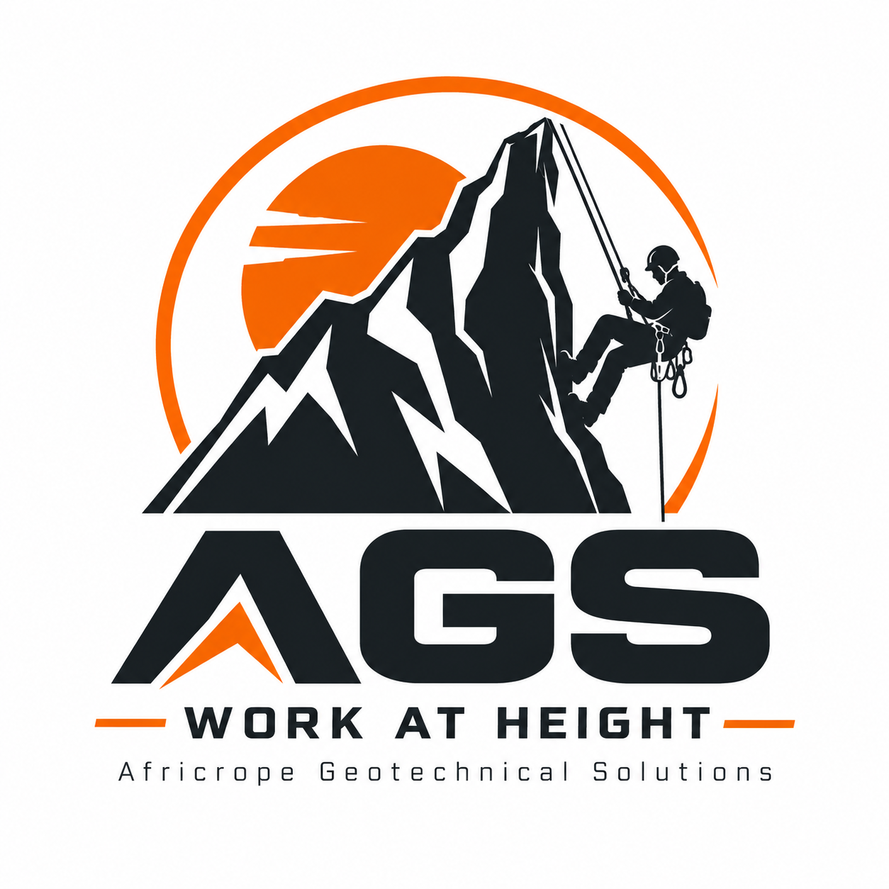
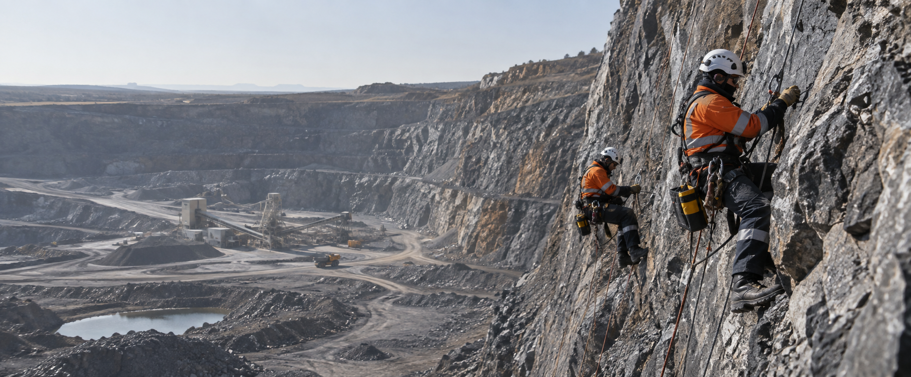

Open Pit / Open Cast
Highwall barring and scaling, monitoring device installation, mesh installation, lateral support, long anchors, shotcrete, secondary blasting, catch fences, boulder blasting, and highwall rescue support.

AFRICROPE GEOTECHNICAL SOLUTION
Rope access | Geotechnical support | Industrial maintenance
AFRICROPE GEOTECHNICAL SOLUTION supports open pit, underground, plant, power station, and high-risk industrial operations with disciplined rope access capability.
Core services
From highwall work to plant shutdown support, Africrope is structured for sites where ordinary access methods slow the job down or increase risk.
Highwall barring and scaling, monitoring device installation, mesh installation, lateral support, long anchors, shotcrete, secondary blasting, catch fences, boulder blasting, and highwall rescue support.
Long anchors, secondary stabilisation, sidewall and hanging-wall support, pillar shotcrete, and controlled blasting support where access and safety discipline matter.
Conveyor maintenance, structural maintenance, welding, bolt replacement, welding and painting quality control, blasting, spray painting, insulation, and sheeting work.
Rope-access bolt replacement, blasting and painting, welding, insulation, boiler maintenance, boiler cleaning, and work-at-height support for heavy industrial environments.
Where we work
Africrope is positioned for contractors, mine owners, engineering firms, and plant operators that need work completed in restricted, elevated, unstable, or difficult-to-reach areas.
Safety & execution
Every scope should start with the access plan, risk controls, site requirements, equipment readiness, and communication structure needed to execute safely.
Work-at-height planning, rope systems, exclusion areas, rescue awareness, and site-specific safety requirements.
Practical field teams aligned to geotechnical support, stabilisation, maintenance, blasting support, and industrial access work.
Clear company details, service categories, and contact channels for quotation requests, tenders, and project discussions.
About Africrope
AFRICROPE GEOTECHNICAL SOLUTION is a South African company focused on rope access, geotechnical support, mining services, plant maintenance, and industrial work-at-height scopes. This first website version is intentionally lean and professional, ready to be expanded with Africrope's own project photographs, certifications, phone details, company profile, and completed project references.
Contact
Send project details, site location, required service, available drawings or photographs, and the preferred timeline.
Temporary V1 contact channel: info@africrope.co.za